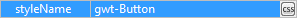

Select a style name from the drop down list.

Click the button to access the Style Name Editor and choose or create a CSS style for the selected widget.
- Select an existing style defined in any local CSS file
- Filter list of CSS rules
- Text of selected CSS rule shown at upper right
- Preview of selected CSS rule shown at lower right
- Add new rules to the list using the Add... button
- Remove rules using the Remove... button
- Rename rules using the Rename... button. Duplicate rule names are not allowed
- Edit the selected style using the Edit... button
- Sort all of the styles in the CSS file using the Sort button